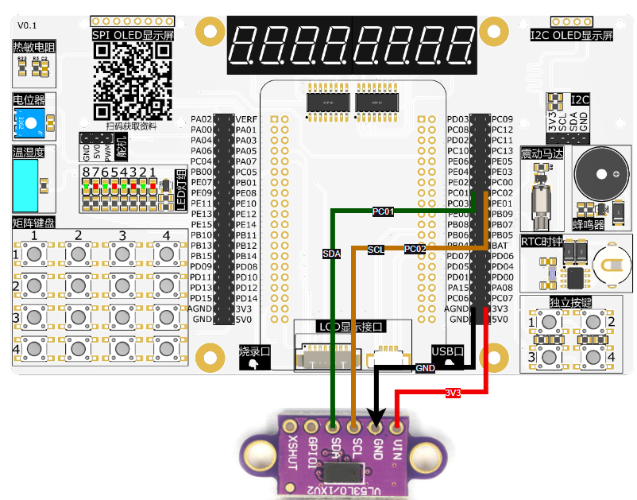

<!DOCTYPE lake>
<p data-lake-id="u14032f9b" id="u14032f9b"><span data-lake-id="uf02d8ef1" id="uf02d8ef1" style="color: rgb(51, 51, 51)">​</span><br/></p><p data-lake-id="u413bc019" id="u413bc019"><strong><span class="lake-fontsize-9" data-lake-id="u0aee0973" id="u0aee0973" style="color: rgb(51, 51, 51)">VL53L0X V2激光测距传感器模块</span></strong></p><p data-lake-id="u3cbc61b5" id="u3cbc61b5" style="text-indent: 2em"><strong><span class="lake-fontsize-9" data-lake-id="u29934f8e" id="u29934f8e" style="color: rgb(51, 51, 51)">VL53L0X飞行时间测距传感器是新一代激光测距模块，VL53LOX是完全集成的传感器，配有嵌入式红外、人眼安全激光，先进的滤波器和超高速光子探测阵列，测量距离更长，速度和精度更高。</span></strong></p><p data-lake-id="u40bce2d3" id="u40bce2d3"><strong><span class="lake-fontsize-9" data-lake-id="ued230192" id="ued230192" style="color: rgb(51, 51, 51)">  	VL53L0X的感测能力可以支持各种功能，包括各种创新用户界面的手势感测或接近检测，扫地机器人、服务性机器人的障碍物探测与防撞系统，家电感应面版、笔记本电脑的用户存在检测或电源开关监控器，以及无人机和物联网(IoT)产品等。</span></strong></p><p data-lake-id="u1973da17" id="u1973da17"><strong><span class="lake-fontsize-9" data-lake-id="u9caa6642" id="u9caa6642" style="color: rgb(51, 51, 51)">产品参数</span></strong></p><p data-lake-id="u2c431acf" id="u2c431acf"><strong><span class="lake-fontsize-9" data-lake-id="u94f35047" id="u94f35047" style="color: rgb(51, 51, 51)">1.工作电压：3～5V</span></strong></p><p data-lake-id="u7bbb504d" id="u7bbb504d"><strong><span class="lake-fontsize-9" data-lake-id="u213e5abe" id="u213e5abe" style="color: rgb(51, 51, 51)">2.通信方式：IIC</span></strong></p><p data-lake-id="u1a154c55" id="u1a154c55"><strong><span class="lake-fontsize-9" data-lake-id="u64d2362d" id="u64d2362d" style="color: rgb(51, 51, 51)">3.测量绝对距离：2m</span></strong></p><p data-lake-id="ub9de2eed" id="ub9de2eed"><strong><span class="lake-fontsize-9" data-lake-id="u2c7b474c" id="u2c7b474c" style="color: rgb(51, 51, 51)">4.Xshutdown（复位）/GPIO（中断）</span></strong></p><p data-lake-id="u8b6f9420" id="u8b6f9420"><strong><span class="lake-fontsize-9" data-lake-id="ufc9d8041" id="ufc9d8041" style="color: rgb(51, 51, 51)">​</span></strong><br/></p><p data-lake-id="uc13a31a6" id="uc13a31a6"><span data-lake-id="uaf8acea1" id="uaf8acea1" style="color: rgb(51, 51, 51)">链接：https://pan.baidu.com/s/15Ld90aG1VC0y_xp120UbZg 提取码：qydr </span></p><p data-lake-id="u9d7d7f37" id="u9d7d7f37"></p><p data-lake-id="u1e0554d0" id="u1e0554d0"><br/></p><p data-lake-id="u551e5e6a" id="u551e5e6a"><br/></p><h2 data-lake-id="o9d7j" id="o9d7j"><span data-lake-id="ucaa323a4" id="ucaa323a4">示例代码</span></h2><h3 data-lake-id="tQAjl" data-lake-index-type="2" id="tQAjl"><span data-lake-id="u49807e34" id="u49807e34">初始化</span></h3><span class="yuque-card-unsupported">[codeblock]</span><h3 data-lake-id="IqhtK" data-lake-index-type="2" id="IqhtK"><span data-lake-id="ue71d7af4" id="ue71d7af4">测距逻辑</span></h3><span class="yuque-card-unsupported">[codeblock]</span>